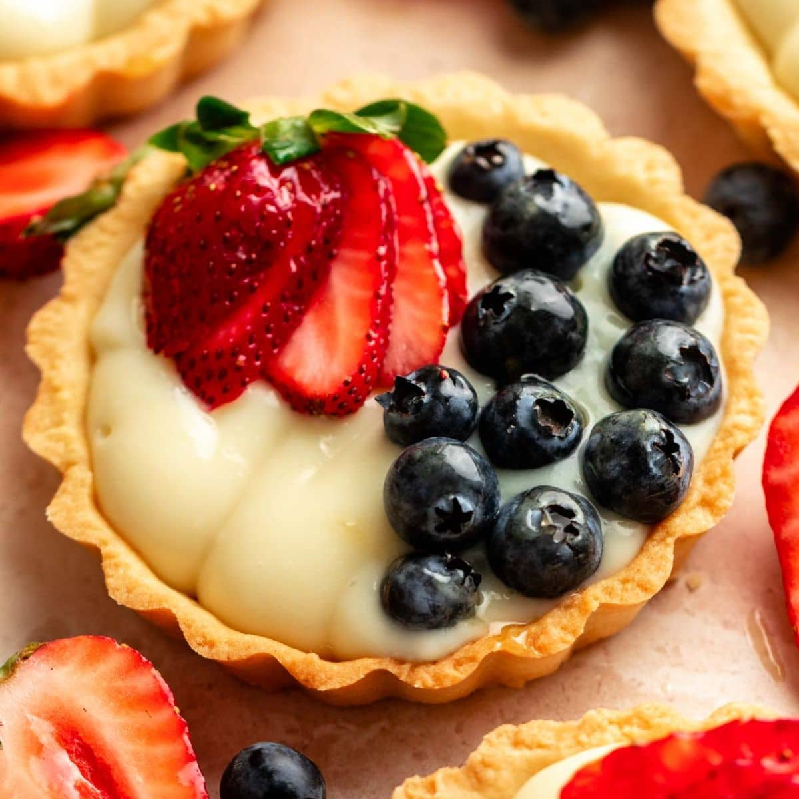
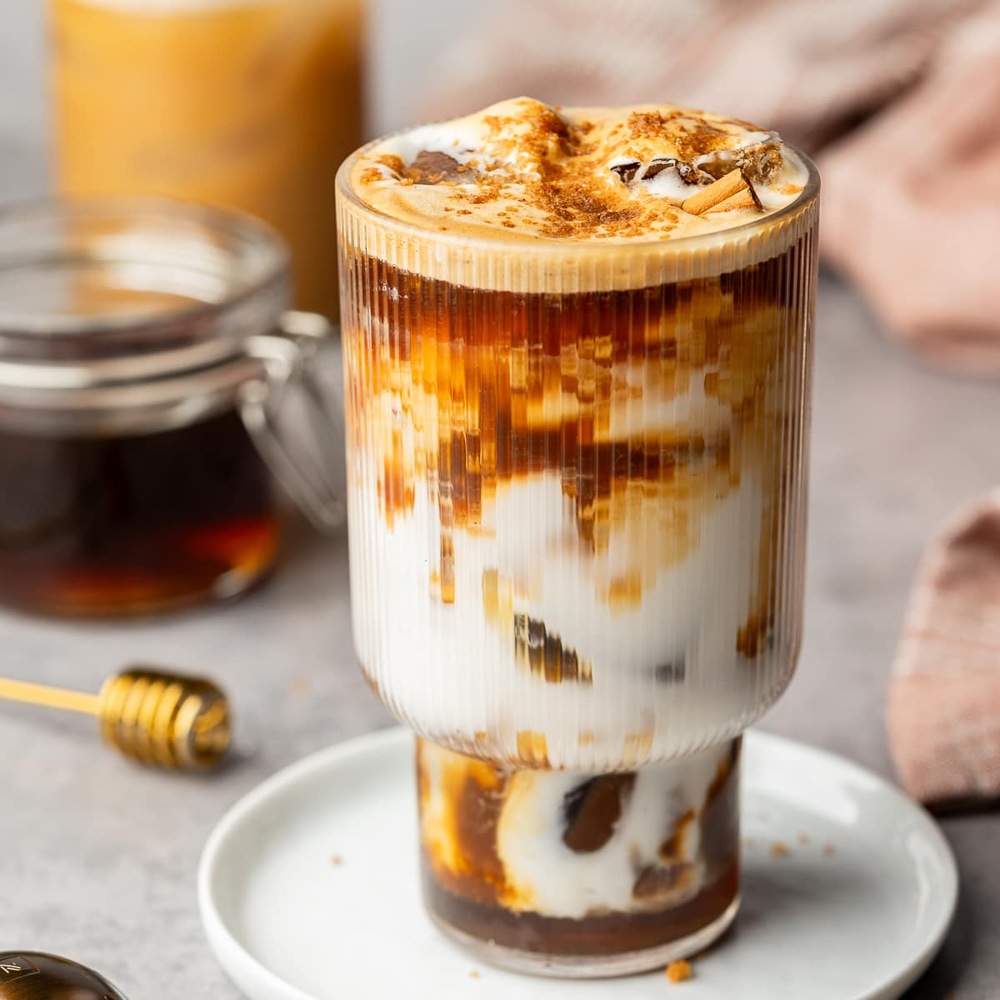
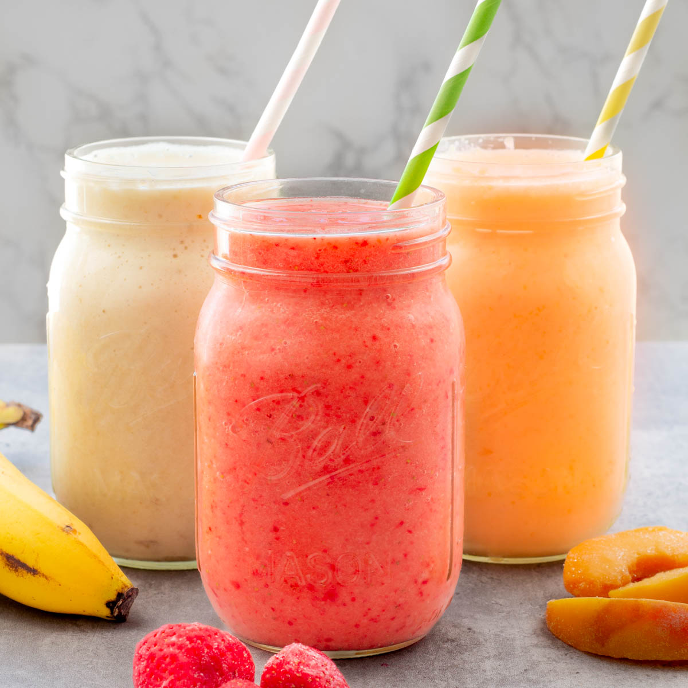

Our Menu
Pâtisserie
-
 Creme Cake PHP 1,200
Creme Cake PHP 1,200Cake filled with cream and strawberries and then topped with cream.
-
 Classic Macarons PHP 666
Classic Macarons PHP 666Meringue-based sandwich cookies with a crisp shell, ruffled "foot," and chewy interior, typically made from egg whites, icing sugar, granulated sugar, and almond flou
-

Mini Fruit Tart PHP 999.99A bite-sized desserts featuring a crisp, buttery, shortbread-like shell filled with smooth vanilla pastry cream, mascarpone, or chocolate.
-
 Strawberry Cheese Cake PHP 344
Strawberry Cheese Cake PHP 344A graham cracker crust, a creamy cheesecake filling and a fresh strawberry topping or sauce.
Drinks
-

Iced Latte PHP 1,200A refreshing coffee beverage made by pouring 1–2 shots of espresso over ice and topping it with 4–8 oz of cold milk.
-
 Black Tea PHP 666
Black Tea PHP 666A fully oxidized, robust tea made from Camellia sinensis leaves, known for its dark color, bold flavor, and higher caffeine content compared to green tea. It features citrus notes and malty features.
-

Fruit Smoothie PHP 999.99A blended, creamy beverage created by mixing fruits, a liquid base (milk, juice, or water), and optional thickeners like yogurt or frozen banana.